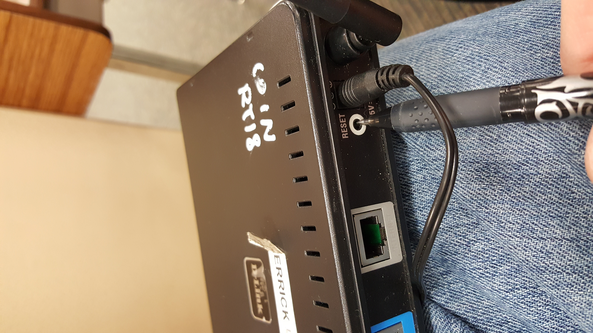

Describe how you construct the LAN step by step in detail and in order. In order to show
the detail of each step, for example, you need to describe which port of the switch you used,
which network protocol you used, etc. You should take snapshots of the screen to facilitate
your explanation. It is expected that within current settings anyone (even without any
knowledge of network) can construct a LAN by referring to your report. Take pictures of
how you connect computers to routers, clearly show the ports used in connection and a
whole of the setting. Make sure the cables you made in Lab 4 is visible in the picture.
To create a LAN, perform the following in order:**NEEDS VERIFING AFTER COMPLETING PROCESSES**
- Verify you have at a minimum two computers, one switch/router, and two ethernet cables.
- Plug in the ethernet cords to the computer in the ethernet port, then connect the other ends into the router.
- In the command line, (for Unix) type in ipconfig



After the LAN is constructed, describe how you configure TCP/IP settings. Write down the
IP addresses and subnet masks you chose for the computers. You should take snapshots of
the screen to facilitate your explanation.
Configuring TCP/IP: this way

Report the result of a simple experiment to measure the data transmission rate in your
network, and analyze the results of this experiment. In addition, report problems met
during this task and your corresponding analysis and solutions. Take a picture(not screen
shot) of file transferring with data rate clearly visible.**Analysis and reporting**
Reporting out:
Problems met during tasks:
Make a table to show the experiment result
task 4
| Performance Results |
| Transfer Rate |
data |
| Data Size |
data |